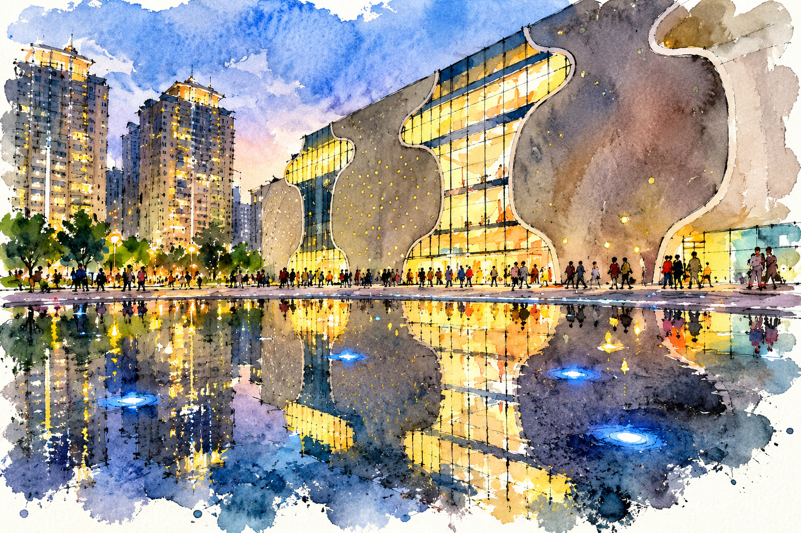

劇院水彩・完整歷程比較
從手工構圖重構，到完整原始色階的向量重建。所有版本使用原尺寸比例。
參考圖與版本對照
參考圖


原始照片、參考作品與早期試作
保留早期工具原始截圖，包含濕材質、墨線與炭筆感比較。
手工重構：第 1–7 輪
校準劇院曲面、高樓、人物、水池與紙白；這些版本仍明顯簡化。
二、參考衍生向量：輪廓、取樣與色階改進
色差是每個 RGB 通道的平均絕對差異，範圍 0–255；它只衡量完成圖，不能衡量作畫動作。
三、完成版逐筆作畫階段
17% 墨線 → 35% 底染 → 50% 天空與樓群 → 70% 劇院 → 85% 街景與倒影 → 100% 完成。
四、連續作畫影片